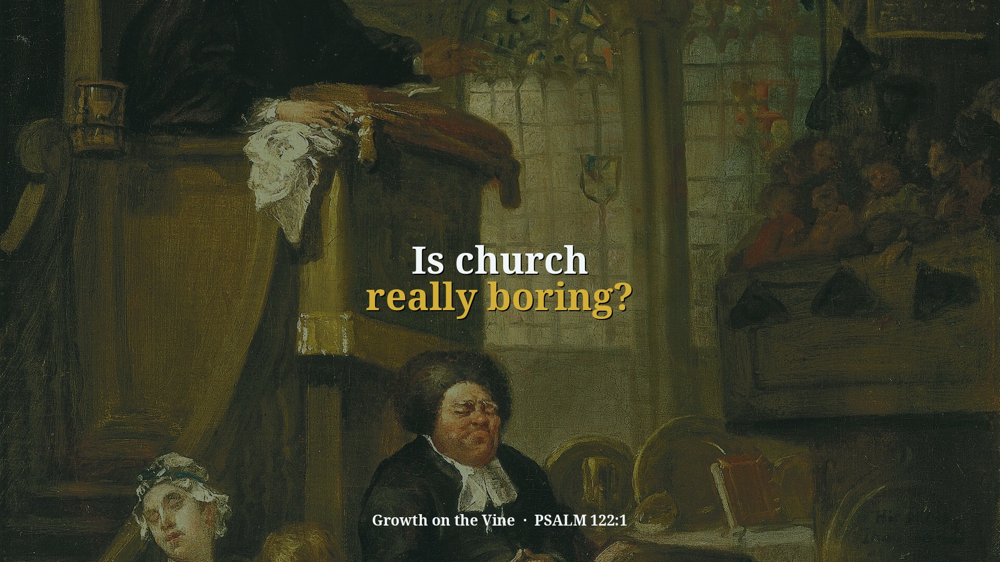
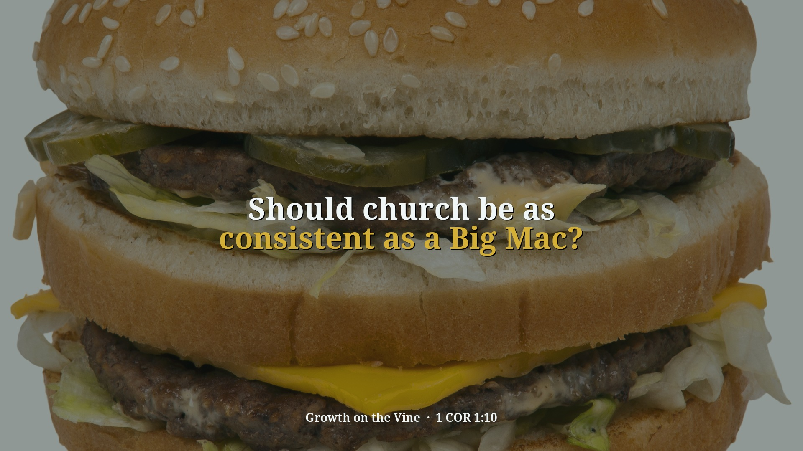
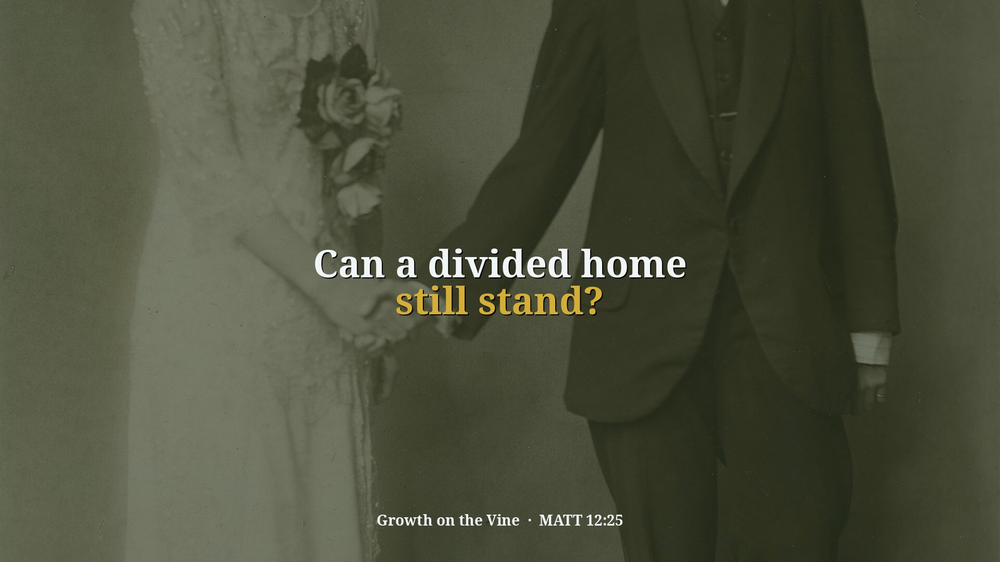
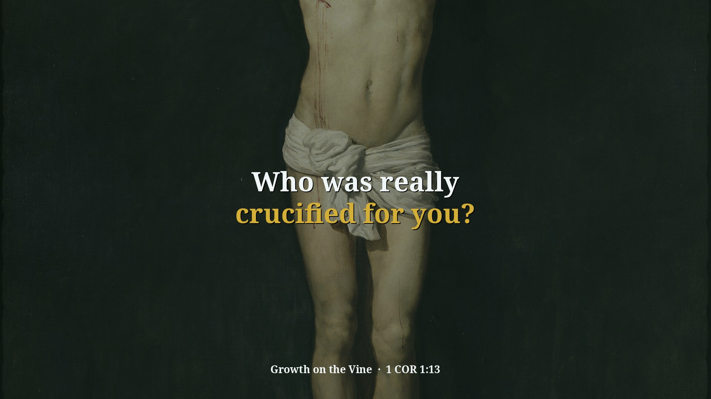
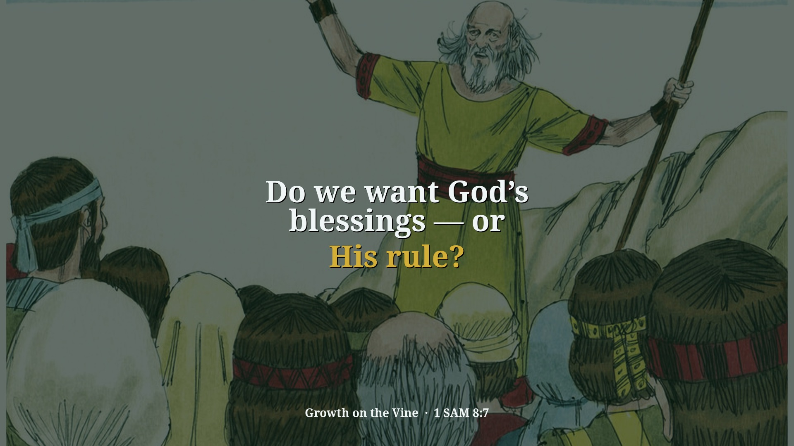
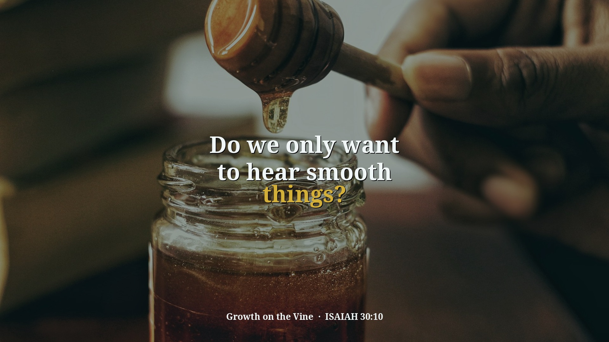

Clips · Recent releases

~1 minIs church really boring?
Church felt boring when he refused to get involved; David was glad to go to the house of the Lord, and the church is the people who make it up.
Watch the clip →
~1 minShould church be as consistent as a Big Mac?
A Big Mac is identical everywhere; Paul says believers should speak the same thing, so the Holy Ghost, salvation and holy living should be preached the same in every church.
Watch the clip →
~1 minCan a divided home still stand?
A husband and wife need to stand together in the same truth and moral standards, showing their children Jesus by example, or the home will not stand.
Watch the clip →
~1 minWho was really crucified for you?
No church name, group or famous minister can save; the focus belongs on Christ, who is one with the Father and the Scriptures.
Watch the clip →
~1 minDo we want God’s blessings — or His rule?
We may want heaven and God’s blessings, but God wants to rule in our lives through His Scriptures.
Watch the clip →
~1 minDo we only want to hear smooth things?
Pastor Kincer warns that people may pay ministers to preach what they want to hear, but Scripture is given to turn us toward righteousness.
Watch the clip →What if a nation turns back to God?
God warns before judgment, and a nation that turns from evil can receive mercy instead of the destruction it was headed toward.
Watch the clip →Can the Word still turn a nation?
The Word itself convicts and convinces people; the turning of a nation starts with the church speaking Scripture beyond its walls.
Watch the clip → ~1 min
~1 min
What if my gifts are just noise?
Though I speak with the tongues of men and of angels, but have not love — I’m just noise. A clanging cymbal.
Watch the clip → ~1 min
~1 min
Can I serve God and still miss knowing Him?
You can prophesy, cast out demons, and do mighty works in Jesus’ name — and still hear Him say, “I never knew you.”
Watch the clip → ~1 min
~1 min
Does real love insist on its own way?
Love doesn’t say “my way or the highway.” It demands the right way — the truth — and keeps no record of wrongs.
Watch the clip → ~1 min
~1 min
Is God looking for fruit — or fireworks?
Love is the first fruit of the Spirit and the peak of divine character. Don’t chase manifestations without becoming like God.
Watch the clip → ~1 min
~1 min
Does “be perfect” mean never fail?
When Jesus says “be perfect,” He isn’t demanding a flawless life — He’s calling you into spiritual maturity and completeness.
Watch the clip → ~90s
~90s
What is the real goal of God’s Word?
The goal of the commandment is love out of a pure heart. Gifts and religious activity are means — not the destination.
Watch the clip →Looking for a verse or topic?
Search clips by keyword, Scripture, or theme — soft entry, Scripture clear.
About
Growth on the Vine shares living truth from Pastor David G. Kincer / Vine Cluster — remade as short, searchable clips. Soft entry at the door; Scripture clear in the content. Food for the soul. Wisdom for the soul.